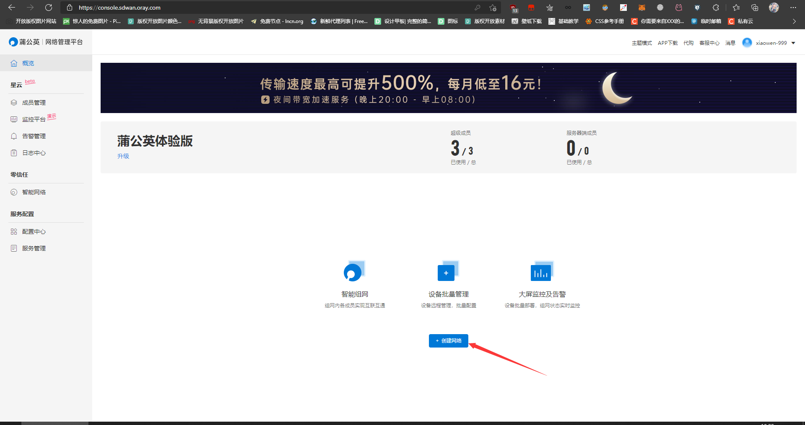
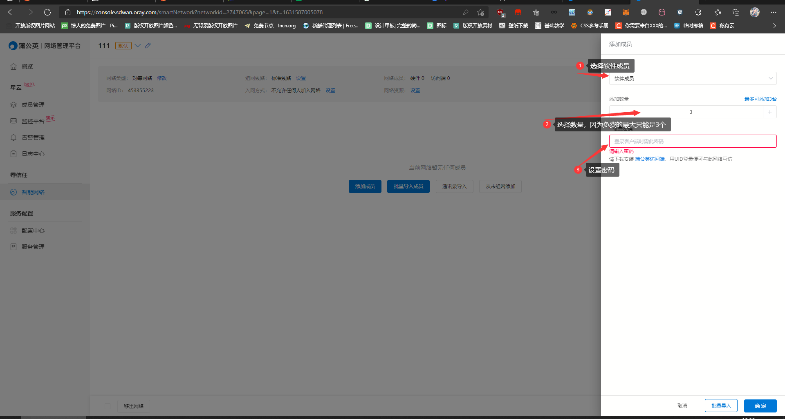

无限制使用TeamViewer远程
简介
现在的远程工具有很多，但是最好用的还是windows自带的远程桌面和TeamViewer。
但是TeamViewer使用的时候是收费的，如果选择的是个人版也是需要登陆才可以使用，有时候还会登陆不上，非常浪费时间。
现在可以利用蒲公英来辅助TeamViewer，这样就可以无限制使用了。
开始
先去蒲公英注册一个免费的个人账号，如果之前注册过也可以直接登陆。
注册完成之后登陆上去，点击【创建网络】。

选择对【等网络】，然后填写【名称】，名称可以随便填写，然后点击【确定】。
创建完成之后点击【添加成员】
选择【软件成员】，然后数量最大只能选择【3】个，之后就设置连接【密码】，填写完成后点击【确定】按钮添加。

看到分配好的内网ip就说明添加成功了。
添加成功后需要下载蒲公英客户端，然后登陆蒲公英。
下载安装后在蒲公英后台复制UID进行登陆，密码就是刚刚添加成员设置的密码。
登陆上去之后就可以看到刚刚添加的成员的IP了。
这样子蒲公英这边就已经设置好了，当然我这里是一台，在你远程的电脑上都要等蒲公英，不管是被控端和控制端都要登陆。
下面就开始设置了TeamViewer了，首先下载TeamViewer，安装好了之后打开软件,然后点击【其他】，选择【选项】。
在【常规】中把【呼入的LAN连接】改为【接受】。
在到【高级】选项里面去设置【个人密码】，这个个人密码是用于远程登陆的密码。
都设置完成后点击【确定】按钮保存，这样就完全设置好了。
设置好了之后就是使用了，无论是被控端还是控制端都需要登陆蒲公英，然后使用TeamViewer远程的时候直接在蒲公英复制被控端的ip地址填写到TeamViewer的【伙伴ID】那个位置，然后点击连接，连接上之后需要填写刚刚设置的密码即可成功连接
原理：
相信到这很多同学都已经明白了其中的原理了，原理就是利用蒲公英进行组网，先把需要远程的电脑都拉到同一个局域网中，之后通过局域网远程，这样TeamViewer就不会限制了。
明白了这个原理之后，其实可以不用TeamViewer远程，直接用windows自带的远程桌面远程即可。
这个技术之前在某鱼上和某宝上有用用来卖钱，既然别人都用来卖钱了我这里要求来过的人留个言评个论不过分吧
结尾彩蛋

本博客所有文章除特别声明外，均采用 CC BY-SA 4.0 协议 ，转载请注明出处！